3 Fractions
3.1 Equivalent fractions
the same number in different forms
1. How much money is each of the following amounts?
(a)  of R200 (b)
of R200 (b)  of R200 (c)
of R200 (c)  of R200
of R200
R40
Did you notice that all the answers
are the same? That is because  , 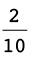 and
, 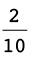 and  are equivalent fractions. They are
different ways of writing the same number.
are equivalent fractions. They are
different ways of writing the same number.
Consider this bar. It is divided into five equal parts.

Each piece is one fifth of the whole bar.
2. Draw lines on the bar below so that it is approximately divided into ten equal parts.

(a) What part of the whole bar is each of your ten parts?
(b) How many tenths is the same as one fifth?
(c) How many tenths is the same as two fifths?
(d) How many fifths is the same as eight tenths?
3. Draw lines on the bar below so that it is approximately divided into 25 equal parts.

(a) How many twenty-fifths is the same as two fifths?
(b) How many fifths is the same as 20 twenty-fifths?
In question 3(b) you found that
 is equivalent to
is equivalent to  : these are just two different ways
: these are just two different ways
to describe the same part of the bar.
This can be expressed by writing
 =
=  which means that
which means that  and
and  are equivalent to
are equivalent to
each other.
4. Write down all the other pairs of equivalent fractions which you found while doing questions 2 and 3.
The yellow bar is divided into fifths.

5. (a) Into what kind of fraction parts is the blue bar divided?
(b) Into what kind of fraction parts is the red bar divided?
(c) If you want to mark the yellow bar in twentieths like the blue bar, into how many parts do you have to divide each of the fifths?
(d) If you want to mark the yellow bar in fortieths like the red bar, into how many parts do you have to divide each of the fifths?
(e) If you want to mark the yellow bar in eightieths, into how many parts do you have to divide each of the fifths?
(f) If you want to mark the blue bar in eightieths, into how many parts do you have to divide each of the twentieths?
6. Suppose this bar is divided into 4 equal parts, in other words, quarters.

(a) If the bar is also divided into 20 equal parts, how many of these smaller parts will there be in each quarter?
(b) If each quarter is divided into 6 equal parts, what part of the whole bar will each small part be?
7. Complete this table of equivalent fractions, as far as you can using whole numbers. All the fractions in each column must be equivalent.
|
sixteenths |
8 |
4 |
2 |
10 |
14 |
12 |
|
eighths |
||||||
|
quarters |
||||||
|
twelfths |
||||||
|
twentieths |
Equivalent fractions can be formed by multiplying the numerator and denominator by
the same number. For example
 =
=  =
= 
8. Write down five different
fractions that are equivalent to  .
.
There are many equivalent fractions. Some examples are:
9. Express each of the following numbers as twelfths:
(a)  (b)
(b) 


(c)  (d)
(d) 


You may divide the numerator and denominator by the same number, instead of multiplying the numerator and denominator by the same number. This gives you a simpler fraction.
the fraction
 is
is  by dividing both the numerator
by dividing both the numerator
and denominator by the common factor of 4.
10. Convert each of the following fractions to their simplest form:
(a)  (b)
(b) 


(c)  (d)
(d) 


(e) (f) 
=

=

Converting between mixed numbers and fractions
Numbers that have both whole number and fraction parts are called mixed numbers.
Examples of mixed numbers: 3  , 2
, 2  , and 8
, and 8 
Mixed numbers can be written in expanded notation, for example:
3  means 3 +
means 3 +  2
2  means 2 +
means 2 +  8 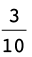 means 8 +
8 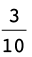 means 8 +  .
.
To add and subtract mixed numbers, you can work with the whole number parts and the fraction parts separately, for example:
3
 + 13
+ 13  13
13  - 3
- 3  (we need to "borrow" a unit from 13,
(we need to "borrow" a unit from 13,
= 16
 = 12
= 12  - 3
- 3  because we cannot subtract
because we cannot subtract
 from
from  )
)
= 17
 = 9
= 9 
However, this method can be difficult to do with some examples - and it does not work with multiplication and division.
An alternative and preferred method is to convert the mixed number to an improper fraction, as shown in the example below:
NOTE
You can obtain the numerator of 19 in one stepby multiplying the denominator (5) by the whole number (3), and then adding the numerator (4).
3 
= 3 + 
=  +
+ 
= 
So you can calculate 3
 + 13
+ 13  using this method:
using this method:
3  + 13
+ 13 
=  +
+ 
=  The answer must be converted to a
mixed
The answer must be converted to a
mixed
number again:  = 17
= 17
1. Convert each of the following mixed numbers to improper fractions:
(a) 5  (b) 2
(b) 2 


(c) 3  (d) 4
(d) 4 


2. Convert each of the following improper fractions to mixed numbers:
(a) (b) 
6

3

(c)  (d)
(d) 
2
 = 2
= 2 
1


3.2 Adding and subtracting fractions
To add or subtract two fractions, they have to be expressed with the same denominators first. To achieve that, one or more of the given fractions may have to be replaced with equivalent fractions.
|
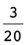 + =
=
= |
=
=
=
= |
We will later refer to this method of adding or subtracting fractions as Method A. |


In the case of  +
+  , multiplying by 20 and by 12 was a sure
way of making
, multiplying by 20 and by 12 was a sure
way of making
equivalent fractions of the same kind, in this case two-hundred-and-fortieths. However, the numbers became quite big. Just imagine how big the numbers will become if you
use the same method to calculate
 +
+  !
!
Fortunately, there is a method of keeping the numbers smaller (in many cases), when making equivalent fractions so that fractions can be added or subtracted. In this method you first calculate the lowest common multiple or LCM of the
denominators. In the case of
 +
+  , the smaller multiples of the
denominators are:
, the smaller multiples of the
denominators are:
12: 12 24 36 48 60 72 84
20: 20 40 60 80 100 120 140
The smallest number that is a multiple of both 12 and 20 is 60.
Both  and
and  can be expressed in terms of
sixtieths:
can be expressed in terms of
sixtieths:
 =
=  = because to make twelfths into sixtieths
you have to divide each
= because to make twelfths into sixtieths
you have to divide each
twelfth into 5 equal parts, to get 12 \times 5 = 60 equal parts, i.e. sixtieths.
Similarly,  = =
= =  .
.
Hence  +
+  =
=  +
+  = 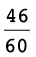 =
= 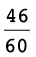 =
This method may be called the LCM method of adding or subtracting fractions.
Adding and subtracting fractions
1. Which method of adding and subtracting fractions do you think will be the easiest and quickest for you, Method A or the LCM method? Explain.
2. Calculate:
(a)  +
+  (b)
(b)  +
+ 
=
 +
+  =
= 
=
 +
+  =
=  = 1
= 1 


(c) 3  + 2 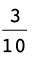 (d) 7
+ 2 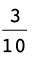 (d) 7  + 3
+ 3 
= 3 + 2 +
 +
+  = 5
= 5 
= 7 + 3 +
 +
+ 

= 10

3. Calculate each of the following:
(a)  -
-  (b)
(b)  -
- 
=
 -
-  =
=  =
= 
=
 -
-  =
=  =
= 
(c) 5  - 3
- 3  (d) 4
(d) 4  - 5
- 5 
= 5
 - 3
- 3  = 2
= 2 
= 4
 - 5
- 5 

=
 -
-  = -
= -  = -1
= -1 
4. Paulo and Sergio buy a
pizza. Paulo eats  of the pizza and Sergio eats two fifths.
How much of the pizza is left over?
of the pizza and Sergio eats two fifths.
How much of the pizza is left over?
the pizza.
5. Calculate each of the following. State whether you use Method A or the LCM method.
(a)  +
+  (b)
(b)  -
- 
=
 +
+  =
=  =
= 
=
 -
-  =
= 
(c)  +
+  (d)
(d)  -
- 
=
 +
+  =
= 
=
 -
-  =
= 
(e)  +
+  (f)
(f)  -
- 
=
 +
+  =
= 
=
 -
-  =
=  =
= 
(g)  +
+  +
+  +
+  +
+  +
+  +
+  +
+  +
+  +
+ 
=
3.3 Multiplying and dividing fractions
think about multiplication and division with fractions
1. Read the questions below, but do not answer them now. Just describe in each case what calculations you think must be done to find the answer to the question. You can think later about how the calculations may be done.
(a) 10 people come to a party, and each of
them must get  of a pizza. How many pizzas must be
bought to provide for all of them?
of a pizza. How many pizzas must be
bought to provide for all of them?
10
(b)  of the cost of a new clinic must be
carried by the 10 doctors who will work
of the cost of a new clinic must be
carried by the 10 doctors who will work
there. What part of the cost of the clinic must be carried by each of the doctors, if they have agreed to share the cost equally?
10
(c) If a whole pizza costs R10, how much
does  of a pizza cost?
of a pizza cost?
R10 \times
(d) The owner of a spaza shop has 10 whole
pizzas. How many portions of  of a pizza each can he make up from the
10 pizzas?
of a pizza each can he make up from the
10 pizzas?
10
2. Look at the different sets of calculations shown on the next page.
(a) Which set of calculations is a correct way to find the answer for question 1(a)?
(b) Which set of calculations is a correct way to find the answer for question 1(b)?
(c) Which set of calculations is a correct way to find the answer for question 1(c)?
(d) Which set of calculations is a correct way to find the answer for question 1(d)?
Set A:  \times
\times  =
=  Set B:
Set B:  =
=  . 50 eightieths \div 10 =
. 50 eightieths \div 10 =

Set C: How many eighths in 10 wholes? 80 eighths. How many 5-eighths in 80? 80 \div 5 = 16
Set D:  is 5 eighths. 10 \times 5 eighths =
is 5 eighths. 10 \times 5 eighths =
 Set E:
Set E:  \div 10 =
\div 10 =  \times
\times  =
= 
Multiply a fraction by a whole number
Example:
8 \times  = 8 \times 3 fifths = 24 fifths =
= 8 \times 3 fifths = 24 fifths =
 = 4
= 4 
Divide a fraction by a whole number
You can divide a fraction by converting it to an equivalent fraction with a numerator that is a multiple of the divisor.
Example:
 \div 5 =
\div 5 =  \div 5 = 10 fifteenths \div 5 = 2
fifteenths = 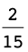
\div 5 = 10 fifteenths \div 5 = 2
fifteenths = 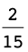
A fraction of a whole number, and a fraction of a fraction
Examples:
A  of R36.
of R36.
 of R36 is the same as R36 \div 12 = R3,
so
of R36 is the same as R36 \div 12 = R3,
so  of R36 is 7 \times R3 = R21
of R36 is 7 \times R3 = R21
B  of 36 fiftieths.
of 36 fiftieths.
 of 36 fiftieths is the same as 36
fiftieths \div 12 = 3 fiftieths,
of 36 fiftieths is the same as 36
fiftieths \div 12 = 3 fiftieths,
so  of 36 fiftieths is 7 \times 3 fiftieths =
21 fiftieths.
of 36 fiftieths is 7 \times 3 fiftieths =
21 fiftieths.
 \times
\times  means
means  of
of  , it is the same.
, it is the same.
 of
of  is the same as
is the same as  \div 12 =
\div 12 =  , so
, so  of
of  is 7 \times =
is 7 \times =  .
.
3. (a) You calculated  \times
\times  in the example above. What was the
answer?
in the example above. What was the
answer?
(b) Calculate
 , and simplify your answer.
, and simplify your answer.
=
Example:
 \times
\times  = of =
= of =  of
of  =
=  =
= 
The same answer is
obtained by calculating 
To multiply two fractions, you may simply multiply the numerators and the denominators.
 \times
\times  = =
= =  =
= 
Division by a fraction
When we divide by a fraction, we have a very different situation. Think about this:
If you have 40
pizzas, how many learners can have  a pizza each?
a pizza each?
To find the number of fifths in 40 pizzas: 40 \times 5 = 200 fifths of a pizza.
To find the number of
3-fifths: 200 \div 3 = 66 portions of  pizza and 2 fifths of a pizza left
over.
pizza and 2 fifths of a pizza left
over.
Since the portion for each learner is 3 fifths, the 2 fifths of a pizza that remains is 2 thirds of a portion.
So, to calculate 40 \div
 , we multiplied by 5 and
divided by 3, and that gave us 66 and 2 thirds of a
portion.
, we multiplied by 5 and
divided by 3, and that gave us 66 and 2 thirds of a
portion.
In fact, we calculated 40 \times
 .
.
Division is the inverse of multiplication.
So, to divide by a fraction, you multiply by its inverse.
Example:
 \div
\div  =
=  \times
\times  = =
= = 
Multiplying and dividing fractions
1. Calculate each of the following:
(a)  of
of  (b) \times
(b) \times 
=
 =
= 
=
 =
= 
(c)  of
of  (d)
(d)  \times 1
\times 1
=

=

(e)  \times
\times  (f)
(f)  of
of 
=
 =
= 
=

2. A small factory
manufactures copper pans for cooking. Exactly  kg of copper is needed to make one
pan.
kg of copper is needed to make one
pan.
(a) How many pans can they make if
 kg of copper is available?
kg of copper is available?
6 pans.
(b) How many pans can they make if
 kg of copper is available?
kg of copper is available?
ns. They can only make whole pans, so they can
make 6 pans withg of copper.
(c) How many pans can they make if
 kg of copper is available?
kg of copper is available?
of copper
left over.
(d) How many pans can
they make if  kg of copper is available?
kg of copper is available?
.
(e) How many pans can
be made if  kg of copper is available?
kg of copper is available?
pans.
(f) How many pans can be made if 5 kg of copper is available?
g of copper is left over.
3. Calculate:
(a) 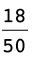 \div  (b)
(b)  \div
\div 
=
 \times
\times  = 6
= 6
=
 \div
\div  =
=  \times
\times  = 6
= 6
(c)  \div
\div  (d) 2
(d) 2  \div
\div 
=
 \times
\times  = 48
= 48
=
 \div
\div  =
=  \times
\times  = 48
= 48
(e) 2  \div
\div  (f)
(f)  \div
\div 
=
 \div
\div  =
=  \times
\times  = 48
= 48
=
 \times
\times  =
=  = 10
= 10  = 10
= 10 
(g) 20 \div  (h) 2 \div
(h) 2 \div 
=
 \times
\times  =
=  = 333
= 333 
=
 \times
\times  =
=  = 33
= 33 
(i) 1 \div  (j)
(j)  \div
\div 
=
 \times
\times  =
=  = 16
= 16 
=
 \times
\times  =
=  = 8
= 8 
4. A rectangle is 3
 cm long and 2
cm long and 2  cm wide.
cm wide.
(a) What is the area of this rectangle?
A = l \times b2
(b) What is the perimeter of this rectangle?
P = 2(l + b) = m
5. A
rectangle is 5 cm long and its area is 8
 cm2.
cm2.
How wide is this rectangle?
8
6. Calculate.
(a) 2  of 5
of 5  (b) 3
(b) 3  \times 2
\times 2
=
 \times
\times  =
=  = 13
= 13 
=
 \times
\times  =
=  = 8
= 8 
(c) 8  \div 3 (d) 3
\div 3 (d) 3  \times 3
\times 3 
=
 \div
\div  =
=  \times
\times  =
=  = 2
= 2  = 2
= 2 
=
 \times
\times
 =
=  = 10
= 10 
(e) 2  \div 5
\div 5  (f) \times 1 \times 1
(f) \times 1 \times 1 
=
 \div
\div  =
=  \times
\times  =
=  =
= 
=
 \times
\times  \times 1
\times 1  = 1
= 1 
7. Calculate:
(a) (  +
+  ) (b)
) (b)  \times
\times  +
+  \times
\times 
=
 (
(  +
+  ) =
) =  (
(  ) =
) = 
=
 \times (
\times (  +
+  ) =
) =  as in (a)
as in (a)
(c) (  -
-  ) (d)
) (d)  \times
\times  -
-  \times
\times 
=
 (
(  -
-  ) =
) =  ( ) =
( ) = 
=
 +
+  =
=  +
+  =
=  =
= 
8. A piece of land with an area of 40 ha is divided into 30 equal plots. The total price of the land is R45 000. Remember that "ha" is the abbreviation for hectares.
(a) Jim buys  of the land.
of the land.
(i) How many plots is this and how much should he pay?
12 plots.
8 000
(ii) What is the area of the land that Jim buys?
16 ha
(b) Charlene buys  of the land. How many plots is this and
how much should she pay?
of the land. How many plots is this and
how much should she pay?
10 plots.
15 000
(c) Bongani buys the rest of the land. Determine the fraction of the land that he buys.

squares, cubes, square roots and cube roots
1. Calculate:
(a)  \times
\times  (b)
(b)  \times
\times 
=

=

(c) 2  \times 2
\times 2  (d) 1
(d) 1  \times 1
\times 1
=
 \times
\times  =
=  = 6
= 6 
=
 \times
\times  =
=  = 2
= 2 
(e) 3  \times 3 (f) 10
\times 3 (f) 10  \times 10
\times 10 
=
 \times
\times  =
=  = 13
= 13 
=
 \times
\times  =
=  = 115
= 115 
 is the square of
is the square of  , because
, because  \times
\times  =
=  .
.  is the square root of
is the square root of  .
.
2. Find the square root of each of the following numbers.
(a)  (b)
(b) 
=

=

(c) (d) 
=
 = 1
= 1 
=
=  = 1
= 1 
3. Calculate.
(a)  \times
\times  \times
\times  (b)
(b)  \times
\times  \times
\times 
=

=

(c) 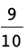 \times  \times
\times  (d)
(d)  \times
\times  \times
\times 
=

=

4. Find the cube root of each of the following numbers.
(a) (b) 
=

=

(c)  (d)
(d) 
=
 = 1
= 1  = 1
= 1 
=
 =
=  = 2
= 2 

3.4 Equivalent forms
Fractions, decimals and percentage forms
1. The rectangle on the right is divided into small parts.

(a) How many of these small parts are there in the rectangle?
(b) How many of these small parts are there in one tenth of the rectangle?
(c) What fraction of the rectangle is blue?
(d) What fraction of the rectangle is pink?
Instead of "6 hundredths" we may say "6 per cent" or, in short, "6%". It means the same thing.15 per cent of the rectangle on the right is blue.
2. (a) What percentage of the rectangle is green?
(b) What percentage of the rectangle is pink?
0,37 and 37% and 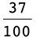 are different ways of writing
the same value (37 hundredths).
3. Express each of the following in three ways: as a decimal; a percentage and a fraction (in simplest form):
(a) 3 tenths (b) 7 hundredths
0,3; 30%;

0,07; 7%;

(c) 37 hundredths (d) 7 tenths
0,37; 37%;

0,7; 70%;

(e) 2 fifths (f) 7 twentieths
0,4; 40%;
0,35; 35%;

4. Fill in the missing values in the table:
|
Decimal |
Percentage |
Common fraction (simplest form) |
|
0,2 |
|
|
|
40% |
|
|
|
|
||
|
0,05 |
|


5. (a) Jannie eats a quarter of a watermelon. What percentage of the watermelon is this?
(b) Sibu drinks 75% of the milk in a bottle. What fraction of the milk in the bottle has he drunk?
(c) Jem used 0,18 of the paint in a tin. If he uses half of the remaining amount the next time he paints, what fraction (in simplest form) is left over?
(1 - 0,18) \div 2 = 0,41